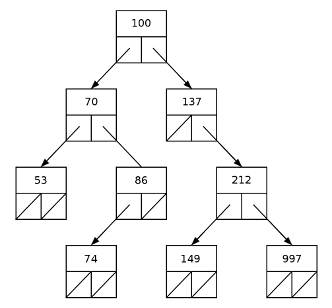

Computer Laboratory 3
CSCI 2041: Advanced Programming Principles
September 27–28, 2021
0. Introduction.
In this laboratory assignment, you will write an OCaml function that deletes a node from a binary search tree (BST). BST’s are commonly discussed in a data structures course, like the one that is a prerequisite for CSCI 2041. As a result, this assignment assumes that you are familiar with the BST deletion algorithm.
1. Theory.
We’ll begin by briefly reviewing BST’s. A
BST is a binary tree with zero or more
nodes. A BST with zero nodes is said to be
empty. Each node in a non-empty BST has a
key, a left subtree, and a right
subtree. The keys are totally ordered, so that if
k₁ and k₂ are keys, then either
k₁ < k₂, or
k₁ > k₂, or
k₁ = k₂. The left subtree and
right subtree are other BST’s, which may be empty
or non-empty.
Now suppose that k is the key at
the root of a BST. Then all nodes in the root’s
left subtree have keys less than k, and all nodes in the
root’s right subtree have keys greater than k. This is
called the BST property. As a
result of the BST property, a key cannot appear in a
BST more than once.
For example, the following diagram shows a
tree that satisfies the BST property. Its keys are
integers. Empty subtrees are shown with slashed boxes, and non-empty
subtrees are shown with arrows.

The BST property lets us efficiently search a BST for a key, and it lets us efficiently add a new node (with a new key) to a BST. It also lets us efficiently delete a node from a BST, given its key. In this laboratory, you must write an OCaml function that efficiently deletes a node from a BST in a way that preserves the BST property.
2. Implementation.
You must first define an OCaml type 'key bst that describes a binary search tree whose keys have the type 'key. Here is how to do that:
type 'key bst = BstEmpty | BstNode of 'key ∗ 'key bst ∗ 'key bst ;;
The type 'key may be any OCaml type; all keys in a
BST must be of the same type. The constructor
BstEmpty returns an empty BST. The
constructor
BstNode(k, l, r)
returns a non-empty BST, with a node at its root. Here
k is the root’s key, of type 'key;
l is the root’s left subtree, of type
'key bst; and r is the
root’s right subtree, also of type
'key bst.
Using BstEmpty and
BstNode, you must define an OCaml function
bstDelete tree key,
where tree is of type
'key bst, and key is of
type 'key. You may assume that tree
satisfies the BST property. Your function must return a
BST that is like tree, and that satisfies
the BST property, but in which the node containing
key is deleted. The node to be deleted, which contains
key may be anywhere in tree. There are five
different cases that your function must handle correctly:
Deleting a key from an empty BST.
Deleting a key from a BST whose root has empty left and right subtrees.
Deleting a key from a BST whose root has an empty left subtree, and a non-empty right subtree.
Deleting a key from a BST whose root has a non-empty left subtree, and an empty right subtree.
Deleting a key from a BST whose root has a non-empty left subtree, and a non-empty right subtree.
Here are some hints. First, since bstDelete cannot use
side-effects: it must return a copy of tree in which the node
containing key does not appear. However, for efficiency, it
must not copy all the nodes of tree! It must copy
only the nodes that are necessary. If tree is well-balanced
and has n > 0 nodes, then bstDelete
must work in approximately O(log₂ n)
time.
Second, it is not an error if a node
containing key never appears in tree! If that
happens, then bstDelete must return either tree,
or else a copy of tree—as described in the previous
hint.
Third, the cases shown above can be most
easily implemented using OCaml’s
match–with mechanism. Each case will have
an expression involving BstEmpty and/or BstNode
on the left of the arrow ‘->’. Most cases will
have an if–then–else
on the right of the arrow.
Fourth, many of the cases will involve
recursive calls. They need not all be tail recursions. Maybe none of them
will be! It is impossible (or at least very hard) to write
bstDelete in a completely tail-recursive way.
Fifth, for the last case, you may need a
helper function that returns the minimum key in tree, or the
maximum key in tree. (You will not need both.) Here is one way
to write a function bstMaxKey that returns the maximum key.
exception BadEmptyBst ;;
let rec bstMaxKey tree =
match tree
with BstEmpty -> raise BadEmptyBst |
BstNode(key, _, BstEmpty) -> key |
BstNode(_, _, rightSubtree) -> bstMaxKey rightSubtree ;;
The function bstMaxKey moves right through tree as deeply as it can, until it finds the rightmost node, and then returns the key in that node. It raises an exception BadEmptyBst if tree is empty, but that should never happen. (We have not yet discussed exceptions in the lectures, but we will soon.) It also uses ‘_’, which is OCaml’s way to denote part of an object that must be present, but which we do not care about.
3. Deliverables.
The file tests3.ml contains a definition of the type 'key bst as discussed above, along with a function bstInsert that adds a key to a BST, and a function bstIsIn that tests if a key is in a BST. It also contains some tests. Run the tests, then submit the OCaml code for your function bstDelete, the test file, along with the results of the tests, all in one file. Put the test results in a comment at the end of your file. Your lab TA’s will tell you how and where to turn in your work. It must be submitted by 11:55 PM on Tuesday, October 5, 2021.